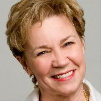

Speakers
Patti Dobrowolski

Keynote Speaker: Patti Dobrowolski, Up Your Creative Genius Boost your creative genius! Visual thinker Patti Dobrowolski captivates and inspires audiences using the business leadership tool of the future: Drawing Solutions. A TEDx speaker, critically acclaimed comic performer, writer and business consultant, Patti’s innovative visual presentations and team gamestorming sessions boost employee and leadership creativity to transform NGOs, Fortune 500 companies, B2B or startups around the globe. Leaders at all levels are inspired to apply visual thinking in every presentation, town hall or staff meeting they hold in the future.
Jennifer Hopper
Jennifer Hopper, The Angel Band Project Jennifer Hopper is a 41 year old Seattle native who in the summer of 2009 became a survivor… of rape, attempted murder and the murder of her partner, Teresa Butz. Soon after, Jennifer found her and Teresa's story thrust into the media spotlight and, after the murder trial in 2011, she was the subject of the Pulitzer Prize winning article "The Bravest Woman in Seattle” written by The Stranger's Eli Sanders. Jennifer now finds herself a unique voice in speaking out and advocating for survivors of sexual violence around the country. As a singer, she was featured in The Angel Band Project, a tribute album raising awareness towards the effects of sexual violence and as a public speaker, she has told her story at local and national events aimed at raising awareness in their communities.
Lisa Fitzhugh
Lisa Fitzhugh, Founding Partner of Creative Ground has over 25 years experience working within the public, private and non-profit sectors. Today she facilitates healthy, more cohesive teams and more expansive, creative leadership, primarily in the public sector.
Lisa is the founder and former executive director of Arts Corps, the largest arts education program in Washington State reaching underserved communities throughout King County. Arts Corps’ award winning program has become a national model for combining arts education with social change. Before Arts Corps, Lisa’s work was primarily in politics, both on the inside for elected officials and as a consultant, designing and implementing public affairs and engagement strategies. She served as an aide to Seattle Mayor Paul Schell, Seattle City Councilmember Tom Weeks, and Congressman Ben Cardin, D-MD.
As a community activist, she has served on several boards including the New School Foundation, the Children’s Music Foundation, and as co-chair of the Learning Committee for Seattle Center’s 50th Anniversary of the World’s Fair. In 2009 she served as Chair for I-100, a grassroots initiative campaign to stop the construction of a new jail. Lisa grew up in Baltimore, Maryland. She holds a political science degree from Duke University.
Carol Sanford
Carol Sanford is founder and CEO of the Responsible Entrepreneur Institute and The Essence Alignment Company, a global consultancy. She has worked with clients such as DuPont, P&G, Intel, Agilent, and Seventh Generation, and has lectured at universities including MIT, University of Michigan, and University of Toronto. She blogs for The Economist, CNBC, CSRWire, Stanford Social Innovation Review, and other outlets. She is also the author of the award-winning book The Responsible Business (Jossey-Bass, 2011) which is required reading at Harvard, Stanford and over 100 universities. The book is used in a Google for one lab, as their innovation and strategy framework. She lives in Seattle.
Imani Sims
Imani Sims is a Seattle native who spun her first performance poem at the age of fourteen. Since then, she has developed an infinitely rippling love for poetry in all of its forms. She believes in the healing power of words and the transformational nuance of the human story.
She allows her selves (Healer, Woman, Poet, Storyteller, Survivor) to tell their truths through her work. Imani is a Board Member and teacher at Bent Writing Institute, and the founder of Split Six Productions in Seattle, WA. She is also a 2012 CD Forum Creation Artist and has featured in productions with Poetry + Motion, Generation Waking Up, Arts Corps, Seattle SPIT, Ladies First, Voices Rising, Langston Hughes Cultural Arts Center, The Tribes Project, and Hampton University. Her book Twisted Oak is available on Requiem Press.
Abby Lodmer
Abby has more energy and interests than G*d. She is a Renaissance woman if there ever was one! Abby completed her undergraduate studies at the University of Arizona with a major in Media Arts and minors in Religious Studies and Dance.
Abby worked for the U of A's Wellness Center, creating healing programs and delivering lectures about health and drug education. During that time, Abby also embarked upon an aerobics training program- and has taught dance, aerobics and yoga in various capacities for the past 14 years.
Abby is a passionate environmentalist, and co-founded the University's Greek Recycling program. Abby went on to do her graduate studies in Geosciences and Broadcast Meteorology at Mississippi State University, becoming a "Weather Girl" for 2 years, until she realized that her true calling was PURE PERFORMANCE, minus the science!~ (the teaching podium was her stage by day, and the comedy club, her venue by night)!
While at MSU, Abby taught undergraduate classes in communication/media, film and editing. Upon returning from graduate school, Abby studied metaphysics and healing through PLA (Perfect Love Awakening), and became a life coach.
Abby then received her teaching credential from California State University, Northridge and combined her trainings and studies to become a life coach/tutor/nutritional counselor for all subjects, ages, grades and learning levels!
Abby Lodmer continues to traverse the world, bringing LIGHT and HEALING through HUMOR! She has performed in comedy clubs across the globe, including the Improv and the Laugh Factory, and has been featured in both television and live shows, playing characters from Rizzo in Grease, The Musical, to the “TV Reporter” and the “Jewish Relative” among other characters in Michael Lucid's show, Pretty Thingsss. Abby continues to uplift humanity through her show: Humor Healing Humanity, and through her stand-up comedy performances.
Kerstin O’Shields
Kerstin has been teaching and coaching for over 16 years. She loves working with people through the joy of singing and presentation. Working to enhance skills of each individual’s highest potential, the focus is to build a natural foundation that can continue to be strengthened and sharpened through the aspects of the physical, mental, and emotional performance. Through this, she creates an environment of success.
Justin Blaney
- #1 bestselling author of Evan Burl and the Falling, a novel
- Producer at Inkliss, an independent film company
- Photographer for NGOs and domestic non-profits
- Speaker on storytelling, film making and leadership
- Founder of Zoxsy, a networking site for musicians and the music industry
- Blogger at I4j.org, a platform for helping nonprofits, businesses and people grow
- Doctoral candidate at University of Maryland in the field of leadership Justin, his wife Anna, and their three daughters live in Issaquah, Washington
Zita Gustin
Zita is a Strategic Planning Coach for Entrepreneurs and Service Professionals who are fabulous at the core of what they do, but want to get clarity and focus around business direction and business growth.
I teach them how to look into the future to see clearly what they really want that future to hold and be. Not only their work future, but their personal future as well - because the two are deeply intertwined. That clear vision and focus then helps my clients as we chart out a series of micro-goals that will strategically lead them to their bigger goals. We weave marketing into the plan including attaining expert status, attracting clients, blogging, product creation, time management, and how to grow and maintain connections and relationships that support the client, their clients, and the community at large.
Effectively, we create a road map so clients know when they are on or off track, so that they are prepared for the typical hurdles they tend to put in their own way, and it helps them to stay on course when distractions, cross roads, or bright shiny objects come their way.